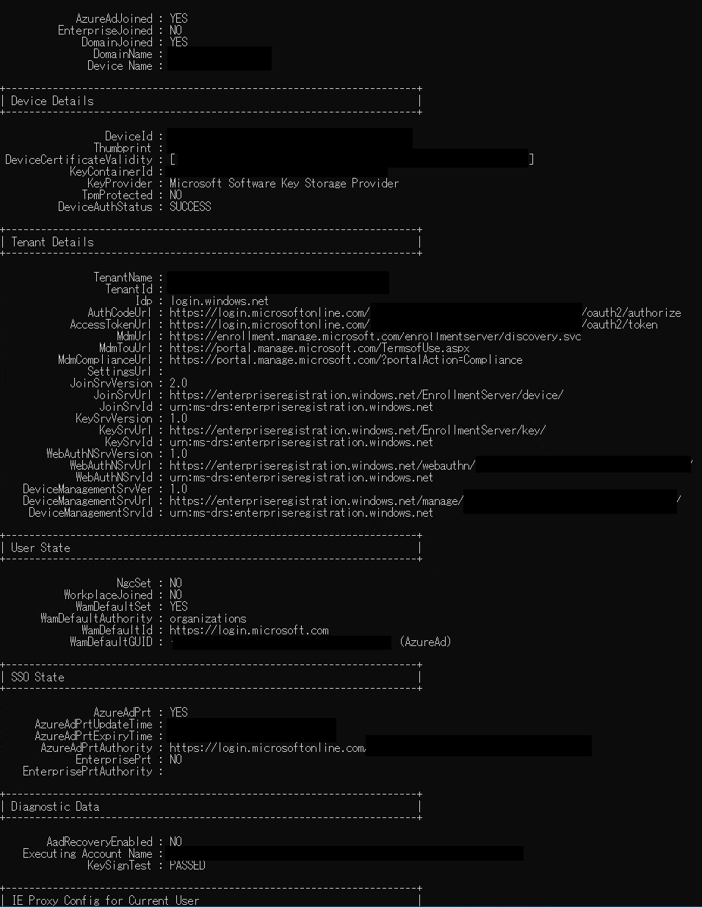

Configuration Manager では共同管理やクラウド管理ゲートウェイにおいて、Azure AD / Hybrid Azure AD に参加している必要がある場合がございます。参加情報を確認させて頂くために取得をお願いさせて頂く情報は以下の通りでございます。
Configuration Manager のクライアント
対象のクライアントを利用するユーザーでログインします。
コマンドの出力結果を保存するフォルダを用意しておきます。以下では、C:\Temp フォルダを例としています。
1 | dsregcmd /status |

1 | dsregcmd /status > C:\Temp\dsregcmd-status.txt |